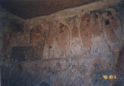

|
『アフガニスタンの仏教遺跡バーミヤン』を書き上げてからはや一年が過ぎようとしている。歳の暮れ、写真をもって右往左往して走り回ったことが思い出される。アフガニスタンの復興を支援する東京会議に出来上がったばかりの本をかかえて出席したこともつい昨日のような気がする。
一九八六年に『巨像の風景』（中公新書）を書いたとき、アフガニスタンは旧ソ連の軍政のもとにあり、この国を再び訪れる機会はもうないかもしれないという暗く重い気持ちに包まれながらペンを走らせたことを覚えている。
しかし『アフガニスタンの仏教遺跡バーミヤン』は違っていた。その年の３月にタリバンは１２５０モンドの爆薬を使って東と西の大仏を破壊し、9月11日にアメリカで同時多発テロが起き、10月7日、アメリカによるアフガニスタン空爆が開始され、11月13日、北部同盟がカブールを制圧し、12月５日、ドイツのボンで開催された会議でアフガニスタンの各派は暫定行政機構の成立に同意する。
|

壁画には落書きと切り取られた跡（左方）が見られる
|
めくるめくように歴史が展開して、アフガニスタンに力づくの平和が立ち戻った。聖戦（ジハード）に明け暮れた10年。同じ国の人びとが血を流し続けた内戦の13年。あわせて23年間の戦争の後、どんなかたちであれアフガニスタンに平和が到来したことを私は素直に喜んだ。武器で越えられないものも、平和であれば手当てを講ずることができる。私は、最初に出会ったカブールとバーミヤンを往時のままに想起することで、アフガニスタンとの再会に備えたいと考え、『アフガニスタンの仏教遺跡バーミヤン』をいささかの淡い希望を抱いて書いた。
幸い、『アフガニスタンの仏教遺跡バーミヤン』には大きな反響があった。時代がこの本を押してくれたのだろう。バーミヤンを訪れる多くのジャーナリストたちもこの本を読んでくれているという。できたら、バーミヤンに地雷の危険を冒して車で行った藤原紀香さんにも読んでもらいたいものだ。
2002年暑夏、東京芸術大学大学美術館で開催された「アフガニスタン 悠久の歴史展」と、それに並行して企画された国際シンポジウム「アフガニスタンの文化――東西文化交流と仏教文化」に参加した。この折、フランスからフランソワ・ジャリージュ氏（ギメ国立東洋美術館館長）、ポール・ベルナール氏（フランス学士院）、ゼマルヤライ・タルジ氏（ストラスブール大学教授）らが来日した。彼らが2002年の５月に戦後のアフガニスタンを訪れ、考古学調査の再開を準備していたのには驚いた。日本の文化支援の立ち遅れを実感させられた。
私たちも国際的に対応できる組織づくりに力を注いだ。そして9月の初め、ようやく「アフガニスタン文化研究・保存連絡協議会」が出来上がった。この協議会が本当に機能し、アフガニスタンの復興に現実的に寄与できるかどうかはメンバーそれぞれの個別の領域を超えた協力と、平和への自覚的で強烈な意志の有無にかかっている。
9月27日、日本・ユネスコ合同バーミヤン・ミッションの一員としてカブールとバーミヤンを訪れた。秋色に包まれたバーミヤンはことのほか美しかったが、石窟の現状は想像をはるかに超えて悲惨であった。崩落の危機にあるバーミヤンをどのように修復し保存し、文化遺産として人類の記憶にとどめうるのか、私たちは調査をし議論をした。
11月21、22の両日、ミュンヘンで開かれた「バーミヤン遺跡保存のための国際協力委員会・作業グループ会議」では、2003年春より開始する保存・修復作業の具体案の策定をめぐって、白熱の議論が交わされた。日本チームは壁画の修復と画刻洞の修復・保存を担当することを申し入れた。大仏の復元、涅槃仏の発掘などの問題は将来的課題とされた。
2003年もまたバーミヤンはさまざまな話題を発信つづけるだろう。文化財の宝庫・アフガニスタン。バーミヤンに修復・保存の手が具体的に差し伸べられるのを待ち望みながら、新しい文化の扉も押し開かれることを私たちは期待している。（和光大学教授）
|